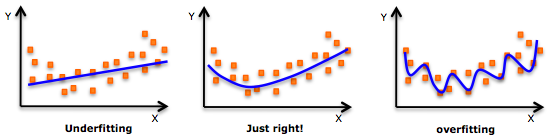
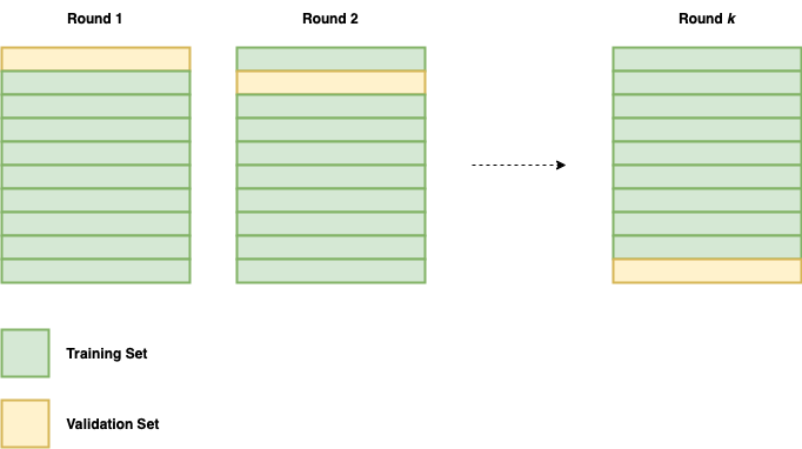

Model Training, Testing and Validation¶
Before training a model, the data need to be split into 'training' and 'testing' sets to avoid model overfitting.1

The training set is the one used, as the name suggests, to train the model, whereas the testing set is a hold-out sample that is used to evaluate the fit of the ML model to the underlying data distribution. The testing set is kept separate while training the model to provide an less biased evaluation of the model once it has been fit to the training dataset.
The human input at this stage is about deciding on the training-testing split and about how this shapes desiderata for model validation—a subsequent process where the model is validated either internally or in wholly new environments (i.e. external validation). As such, the decision can be very consequential for the trustworthiness and reasonableness of the development phase of an ML/AI system. For instance, what if the training/testing split is not random? What if, hypothetically, the training data contain only examples from one class of objects and the testing data contain instances of an entirely different class? We would be unlikely to get a very useful model.
There are various methods to help reduce the chance of this issue occurring, which are widely available in popular package libraries (e.g. the scikit-learn library for the Python programming language). However, a common method is to use something known as 'cross validation'.
One of the most popular forms of cross validation is K-Folds Cross Validation. Here, the dataset is first split into training and testing sets, and then the training set is further split into k different subsets (e.g. 10 subsets). The model training process then occurs k times, using a different subset as the validation set on each round. At the end, an average is taken from the k models and this is tested against the original hold out testing set. The following graphic should help you visualise this.

This type of validation is also known as 'internal validation', to distinguish it from external validation, and, in a similar way to choices made about the original training-testing split, the manner in which it is approached can have critical consequences for how the performance of a system is measured against the real-world conditions that it will face when operating “in the wild.”
Therefore, external validation can also be performed, either using entirely novel datasets—perhaps from different sites or using different collection methods. Or, separate external teams may even be able to externally validate a research model by attempting to reproduce similar results. To support this it is vital to ensure that the steps taken during these stages are properly documented and reported, as we will see in the next section.
-
In short, overfitting occurs when a model is fit too closely to a specific set of data, likely leading to unnecessary complexity (e.g., too many features or parameters when compared to the number of observations). The model may perform very well on the training data, but perform poorly when presented with new observations. ↩